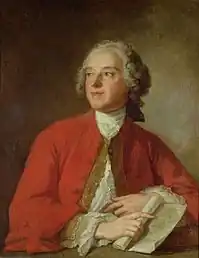
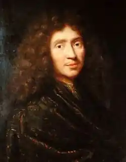
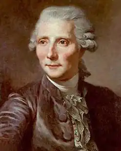

БОМАРШЕ, П'єр-Оґюстен Карон де (Beaumarchais, Pierre-Augustin Caron de — 24.01. 1732, Париж — 18.05. 1799, там само) — французький драматург.Життя і творчість Бомарше можна вважати громадянським подвигом: його діяльність була протестом проти соціальних підвалин "старого ладу". Син ремісника-годинникаря і сам годинникар, він розпочав із того, що винайшов анкерний спуск у годинниковому механізмі (що свідчило про його талант механіка) і зміг захистити свій винахід, привласнений одним королівським годинникарем. Таким чином він, підмайстер, виграв свій перший процес, замірившись на існуючу систему та порушивши встановлений порядок. Його замовниками стали королівська сім'я, знать, багаті фінансисти. Поступово Бомарше посів високе суспільне становище, отримав важливі посади. Він прилучився до фінансових, банківських, комерційних операцій. Бомарше був підприємливим і йому часто таланило.
У 1764 р. він уперше відправився за кордон — спочатку в Іспанію, де виконував доручення французького уряду, пов'язане з делікатними політичними та економічними обставинами: у 70-х pp. він декілька разів відвідав Англію, Голландію, Австрію. Метою його поїздок було виконання різноманітних дипломатичних доручень. Бомарше переконав французький уряд надати допомогу Північній Америці у її боротьбі з метрополією. Маючи рідкісне дипломатичне обдарування, Бомарше вів таємні переговори з американськими агентами, уклав угоду між Францією та Америкою і постачав повстанців зброєю.
У 1773—1778 pp. Бомарше вів тривалий судовий процес із приводу спадщини зі своїм супротивником графом де Лаблашем. Цей процес, виграний ним урешті-решт, перетворився у боротьбу з королівським правосуддям і самим королем. Окрім того, в 1777 р. Бомарше заснував товариство драматургів, які в ті часи цілком залежали від книговидавців та акторів, і домігся визнання авторського права. Він віддавав усі свої сили та всі статки для того, щоб видати твори Вольтера, дві третини з яких були забороненими. У 1783—1790 pp. йому справді вдалося видати зібрання творів Вольтера у 70 і 92 томах. Вважаючи забобони "найстрашнішим лихом роду людського", Бомарше жваво цікавився новими науковими відкриттями. Кмітливість, мужність, активність, непохитність духу проявив драматург і в роки революції. Він постачав революційні війська зброєю. У 1792 р. Бомарше заарештували, він дивом уник смерті, емігрував, а в 1793 р. повернувся на батьківщину, домігшись зняття із себе звинувачень. Під час якобінської диктатури та з часи Директорії він був у заслуженій пошані. Активна громадська діяльність Бомарше постійно супроводжувалася літературною творчістю — і публіцистичною, і художньою. Його відомий у всій Франції судовий процес відобразився у "Чотирьох мемуарах для ознайомлення зі справою П'єра Карона де Бомарше" (1773—1774), які мали великий успіх. У "Мемуарах"("Memoires") Бомарше піддав осуду всі форми гноблення, несправедливості та тиранії. Використовуючи свій полемічний талант і художнє обдарування, Бомарше написав "Мемуари" наче комедію: його супротивники змальовані як комічні персонажі, і сцени, в яких зони діють, також сповнені комізму (особливо є наводяться словесні перепалки Бомарше зі суддею Гезманом і його дружиною). Він засудив суспільні закони, притаманні "старому ладу". Бунт Бомарше мав соціальний характер, оскільки він протестував проти режиму абсолютної монархії. Бомарше боровся проти парламенту як інституту, перетвореного з реакційний бюрократичний заклад. "Мемуари" були спалені катом, але їхнього автора одностайно визнали "великим громадянином". Пізніше, після цілковитої перемоги, Бомарше написав філософський твір "Найпростіші думки про відновлення парламентів "у формі доповіді королю, де він сформулював свої політичні погляди: королівська влада не дається Богом, закони призначені для блага народу і є недоторканими; будь-який уряд повинен пам'ятати, що влада належить народові тощо. Художня творчість Бомарше значна і різноманітна. Надихнувшись народними фарсами, він писав т. зв. веселі "паради", в яких головні персонажі — простолюдини ("Жан-дурень на ярмарку", "Колен і Колетта", "Чоботи-скороходи" та ін.). У цих творах Бомарше критикує суспільні вади: у "парадах" прослідковуються начерки деяких персонажів, які з'являться згодом у більш зрілих творах драматурга. Драматургічна діяльність Бомарше розпочалася з написання міщанських драм. До першої з них — "Євгенії" ("Eugenie", 1767), в якій йшлося про те, як розбещений аристократ звабив цнотливу дівчину, — Бомарше додав теоретичний маніфест-передмову "Дослідження про серйозний драматичний жанр". Він заперечує трагедію, заявляючи, що сучасного глядача не можуть цікавити події, які відбувалися в Афінах чи Стародавньому Римі, оскільки вони не навчають правилам моралі. Спектакль повинен викликати у глядачів почуття співпереживання, що ставило би їх на місце героїв і таким чином застерігало від життєвих помилок. Дотримуючись своїх принципів, Бомарше написав ще одну міщанську драму — "Двоє друзів, або Ліонський купець" ("Les deux amis, ou Le negotiant de Lyon", 1770). Драматичні події, що спіткали доброчесних банкірів, мали підкреслювати шляхетність, чутливість, самовідданість героїв, пройнятих чи почуттям дружби, чи любов'ю. Але, попри композиційну доско-налість п'єси, герої її далекі від реальних людських характерів. Бомарше і сам зрозумів, що серйозний жанр не для нього, і тому звернувся до комедії. "Севільський цирульник" ("Le barbier de Seville, ou La precaution inutile", 1775) спочатку мав форму "параду", згодом — опери, і лише потім комедія набула форми, відомої багатьом поколінням глядачів. Найголовнішим для Бомарше було висловити свою відданість інтересам третього стану. Недарма граф Альмавіва з допомогою свого слуги Фігаро одружується з дівчиною із буржуазної сім'ї Розіною, яка, люблячи його, не бажає бути його утриманкою. Глядача вражають динамічність дії, чудова словесна гра, бездоганний механізм інтриги. Персонажі традиційної комедії зажили в Бомарше новим життям. Опікун Розіни — лікар Бартоло, ретроград і мракобіс, не намагається приховати свого неприйняття нової епохи: "Що вона нам дала такого, що ми мусимо її вихваляти? Всілякі дурниці: вільнодумство, всесвітнє тяжіння, електрику, віротерпимість, віспощеплення, хіну, енциклопедію та міщанські драми". Але Бартоло аж ніяк не дурень; як людина хитра та підозрілива, він — небезпечний супротивник, до того ж, проникливий психолог: він розкриває всі хитрощі і Фігаро, і Альмавіви, і Розіни. Це гранично достовірний персонаж: будучи кмітливим, Бартоло не втрачає гідності, навіть зазнавши невдачі. Багато нового привніс Бомарше і в характер спритного слуги — Фіґаро. У його монологах, які не мають безпосереднього стосунку до інтриги комедії, звучить авторське "я". Це слуга, який протестує свідомо та всерйоз, він відкрито засуджує свого пана. Слова Фігаро стають звинувачувальним актом і проти всього суспільства. За традицією Фігаро звертається до графа "ваша світлосте", "монсеньйор", але насправді він зовсім не поважає його. В уста Фігаро Бомарше вкладає і слова-роздуми про "республіку літераторів", розвінчуючи своїх супротивників, нікчемних "комах", які заважали йому творити. Гостро звинувачувальний характер має і образ Базіля. Знаменита його тирада про наклеп наче відтворює портрет безчесного парламентського радника Гезмана. Це нахабний викрутень, який слугує лише тим, хто більше заплатить. "Шалений день, або Одруження Фігаро" ("ha folle journee, ou Le mariage de Figaro", 1784), яку без вагань можна вважати шедевром сценічного мистецтва та суспільно-політичним актом, була справжньою сповіддю Бомарше. Недарма Людовік XVI, прочитавши у 1782 р. рукопис комедії, заборонив ставити її на сцені, заявивши: "Якщо бути послідовним, то, щоб дозволити постановку цієї п'єси, потрібно зруйнувати Бастилію. Ця людина знущається з усього, що слід поважати в державі". Бомарше чудово розумів, що причини заборони його п'єси були суто політичними. Але сам Бомарше, який неофіційно займав пост міністра і вирішував важливі державні справи, був потрібний уряду, через те, попри заяву короля, перемогу все ж здобув драматург. Комедія була передвісницею 1789 року. Недарма Дантон заявив, що "Фігаро" поклав край аристократії, а Наполеон назвав п'єсу "революцією в дії". У "Весіллі Фіґаро" герой стає довіреною особою графа Альмавіви. Він збирається одружитися з покоївкою графині Розіни — Сюзанною. Але граф, захопившись Сюзанною, хоче зробити її своєю коханкою, скориставшись старовинним феодальним правом першої ночі. Фігаро веде з графом наполегливу боротьбу за своє право закоханого та людську гідність. У конфлікті "хазяїн-слуга" програє граф. Розум, хитрість, мужність простолюдина Фіґаро виявляються сильнішими від станових привілегій графа. "Весілля Фігаро" — неперевершена комедія інтриги. Це музична п'єса (напр., вокальні партії у сцені суду, акт 3), у якій відтворена точна і достовірна картина звичаїв Франції (те, що дія відбувається в Іспанії, не обмануло глядача). Найголовнішим у п'єсі залишається характер Фігаро, який наділений багатьма автобіографічними рисами. Фігаро відразу ж здогадується про намір графа і відмовляється відправитися з його дорученням за межі замку: він не має наміру працювати для Альмавіви, який замислив звабити його кохану. Фігаро веде декілька інтриг одразу, вважаючи себе вродженим царедворцем; він одразу осягає смисл цього важкого ремесла, яке полягає в тому, щоб "отримати, брати і просити". Проте він у жодному випадку не дозволить, щоб його ображали. Він заявляє графові, що з розумом і талантом просунутися службовою драбиною неможливо, що всього може досягти лише запопадлива посередність. Особливе значення має монолог Фігаро у п'ятій дії. Цей монолог порушував усі існуючі тогочасні закони драматургії: протягом тривалого часу на сцені говорить слуга, і не про хід інтриги, а про суспільство, про себе, про те, що сильні світу сього не завжди "сильні" розумом, що вони не доклали жодних зусиль для того, щоб досягти свого благополуччя. Бомарше жваво цікавився проблемою реформи опери, намагаючись знайти прийоми, за допомогою яких можна було б передати філософський зміст п'єси мовою музики.